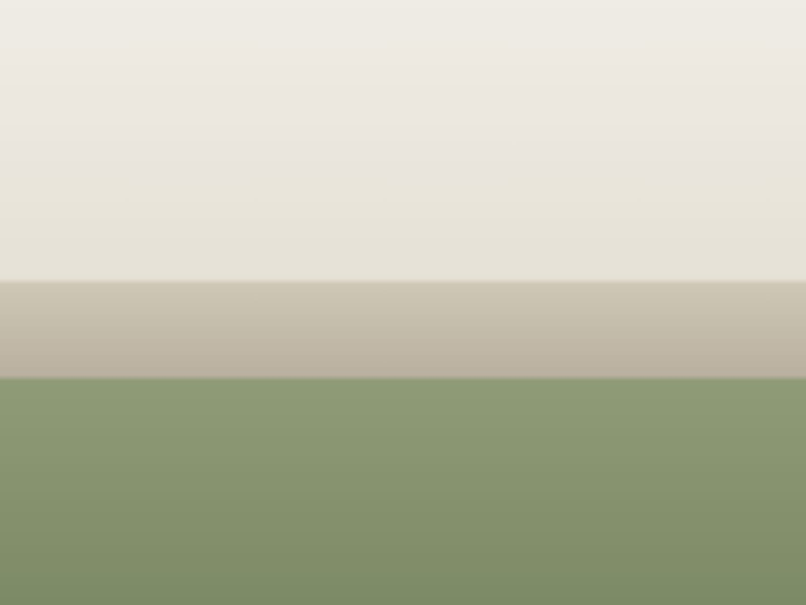

Как я использую ИИ.
И как встроить его в компанию.
Опыт архитектора и дизайнера интерьера: где ИИ реально помогает, а где решение остаётся за человеком
Сначала — где уходит время
- сборка референсов в презентацию
- спецификации и пересчёт
- рендеры, которые превращаются в ролик вручную
- переименование, пересохранение, выгрузки
- КП, которое собирается три дня
Ни один из этих пунктов — не дизайн.
Это обслуживание дизайна.
ИИ — не плагин. Это сотрудник, который умеет писать на языке твоих программ.
Три способа подключения
Диалог
кинул файл, фото, PDF → получил результат
Коннектор
готовый «провод» к сервису: почта, диск, календарь
Скрипт
ИИ пишет команду на языке программы: AutoCAD, Revit, 3ds Max
Коммуникация
- Почта
- читает переписку по объекту, выдаёт статус
- Календарь
- ставит встречи по голосовой команде
- Telegram
- бот, который пересказывает чат и готовит черновик ответа
Знания компании
Google Диск подключается напрямую. ИИ ищет не по названию файла, а по смыслу.
> найди спецификацию по объекту на Патриарших
> собери референсы и наброски проекта в единый мудборд
> оживи рендеры гостиной в ролик с движением камеры
Проектирование
AutoCAD
AutoLISP — слои, блоки, штампы
Revit
Dynamo, pyRevit — спецификации, ведомости
3ds Max
MAXScript, Python — чистка сцены, батч-переименование, параметрическая геометрия
Визуал
Анимация
оживляет рендеры движением камеры и светом — для подачи проекта клиенту
Концепт
собирает референсы и рендеры в единую историю проекта
Photoshop
скрипты и actions, батч-обработка рендеров
Из рендера — в ролик
Статичный рендер оживает движением камеры и света. Клиент видит не картинку, а пространство — так проект продаётся сам.
Что ИИ не делает
- Не проектирует.
- Не имеет вкуса.
- Не отвечает за размеры и деньги.
- Не заменяет разговор с клиентом.
Дизайн остаётся мой.
План внедрения
Сегодня
подключить почту, диск, календарь
За неделю
собрать референсы и рендеры в единый архив
За месяц
собрать скрипты под повторяющиеся задачи в CAD и Revit
Рутина падает.
Время идёт в проект и в клиента.